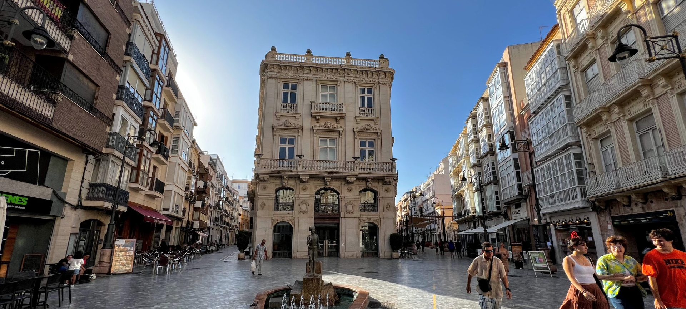
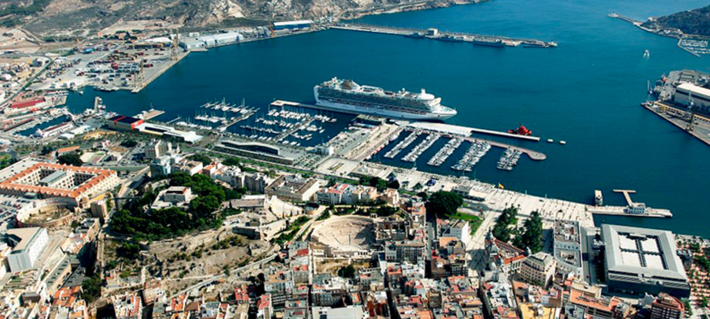

CARTHAGO NOVA
Muy noble y muy leal. Siempre heroica, ciudad de Cartagena

PUERTO ETERNO
Fenicios, cartagineses y romanos: bañados por las mismas aguas

MARE NOSTRVM
El paraíso a los pies del Mediterráneo